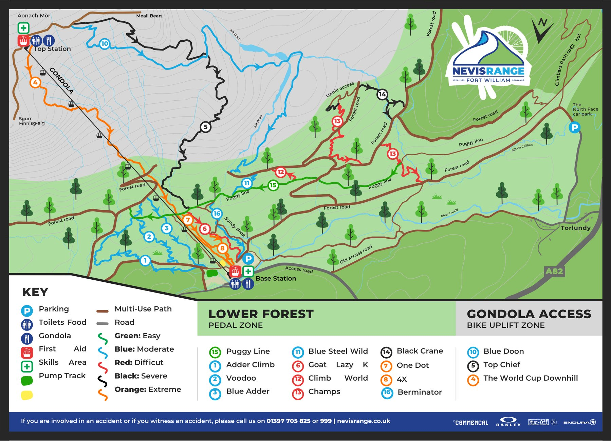
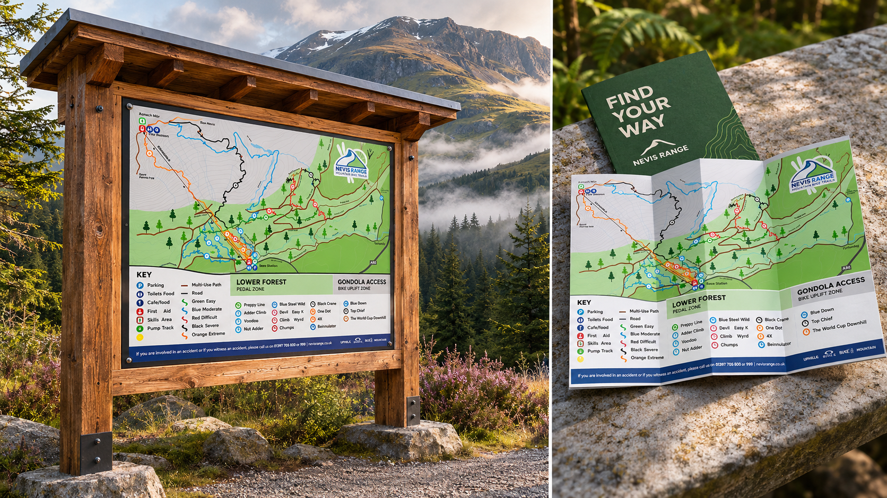

MY NEVIS RANGE MAPS / INTERACTIVE PREVIEW
I redesigned
the trail maps.
I added a 3D preview of my map artwork. Drag to orbit, use + / − to zoom, or try the fly-through.

3D is unavailable in this browser. The original map remains available below.
SELECTED JOURNEY
World Cup DownhillOrange / Extreme · Illustrative overlay
Ready when you are.
I used the map artwork from my portfolio as the texture. Added 3D landform and highlighted paths are a new creative interpretation. Names and grades come from the source; overlay positions are approximate. Nevis Range’s trail area is on Aonach Mòr, near Ben Nevis.
FROM SCREEN TO REAL-WORLD SCALE
I designed maps
for signs and print.
I used these concept mockups to show how the maps could appear on a trailhead sign and a flyer.

AI-generated in-situ concept, not a photograph of an actual installation. Highland backdrop inspired by the Ben Nevis region; not a verified viewpoint. Small labels in the generated mockup may differ from the original map. The source artwork is shown below.
THE DESIGN THREAD
Recognition,
before decoration.
I used matching numbers, names, colours and grade symbols across the maps and trail signs.
I included the original flat artwork so the full key and overview remain available alongside the 3D preview.
Read my original case study ↗